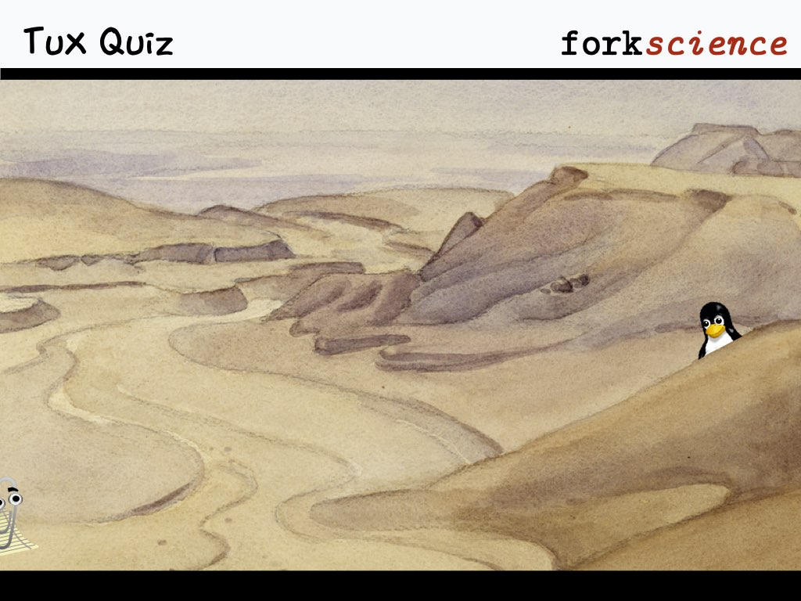

Question:
Which statement is
not
true about two files with the same inode?
A
Modifying one also modifies the other
B
Deleting one does not delete the other
C
They could be accessed through the same path